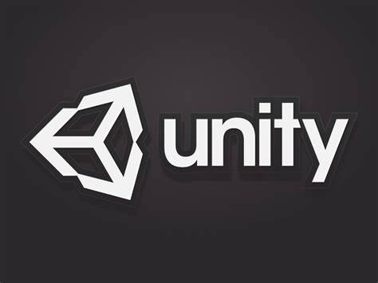
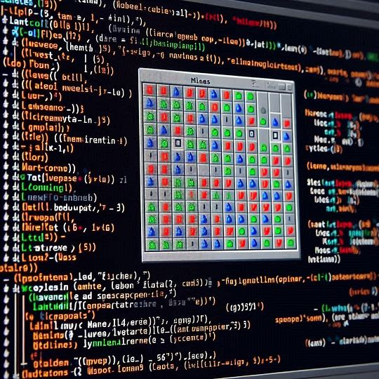

<!DOCTYPE html>
<html lang="en">
<head>
    <meta charset="UTF-8">
    <meta name="viewport" content="width=device-width, initial-scale=1.0">
    <title>Portfolio_Louis_Boucard</title>
    <link rel="stylesheet" href="./css/projet.css">
</head>
<body>
    
</body>
</html>


<head>
    <script src="https://ajax.googleapis.com/ajax/libs/jquery/1.12.0/jquery.min.js"></script>
    </head>
    <nav>
      <ul>
        <li><a href="index.html">Home</a></li>
        <li> <a href="presentation.html">Presentation</a></li>
        <li> <a href="parcours.html">Parcours</a></li>
        <li> <a href="projet.html">Projet</a></li>
        <li> <a href="contact.html">Contact</a></li>
        <li class="slide"></li>

      </ul>
    </nav>

    <body>
      <header>
        <h1>Mes projets</h1>
      </header>
      <main>
      <a href="veille.html" class="veille-btn">Veille Technologique</a></li>

        <section class="project left">
          <h2>TardyGrade</h2>
          
          <p>Le projet Tardigrade consiste à développer un réseau social en utilisant le framework Symfony,
             avec un accent particulier sur la création et la gestion de retards.
              Les utilisateurs pourront créer des retards en spécifiant des détails tels que la date,
               l'heure et la raison du retard. Ils auront également la possibilité de gérer ces retards,
                en les modifiant ou en les supprimant selon leurs besoins.
                 Le réseau social offrira une interface conviviale et intuitive pour faciliter la création,
                  la gestion et la visualisation des retards,
                   tout en mettant en œuvre les fonctionnalités avancées de Symfony pour garantir
                    la sécurité et les performances du système.</p>
                    <a href="#">Lien vers le projet 1</a>

        </section>
        <section class="project right">
          <h2>Jeu vidéo 3D Unity</h2>
          
          <p>  j'ai créé un passionnant jeu de survie en utilisant Unity 3D.
             Dans ce jeu, les joueurs sont plongés dans un environnement hostile où ils doivent
             lutter pour leur survie contre les éléments, les monstres et d'autres dangers.
              J'ai intégré des mécaniques de crafting pour permettre aux joueurs de fabriquer des outils,
               des armes et des abris afin de se protéger et de progresser dans le jeu.
                De plus, j'ai créé un système de gestion des ressources et de la santé pour ajouter une dimension
                 stratégique au gameplay. Avec des graphismes immersifs et une atmosphère captivante,
                  mon jeu de survie offre une expérience palpitante où chaque décision compte pour rester en vie
                   dans un monde hostile. Ce projet m'a permis d'explorer les fonctionnalités avancées d'Unity 3D
                    et de développer mes compétences en conception de jeux."</p>
          <a href="#">Lien vers le projet 2</a>
        </section>
        <section class="project left">
          <h2> Démineur en c++</h2>
          
          <p>j'ai créé un jeu démineur en C++, un classique revisité avec une touche personnelle.
             Ce projet m'a permis d'explorer en profondeur les concepts de la programmation orientée objet et
              de mettre en pratique mes compétences en algorithmique. Dans ce jeu, les joueurs peuvent mettre
               à l'épreuve leur logique et leur réflexion pour éviter les mines cachées sur un plateau de jeu.
                J'ai également inclus des fonctionnalités telles que la génération aléatoire de cartes et une interface
                 utilisateur conviviale. Créer ce jeu démineur a été une expérience enrichissante qui m'a permis
                  de perfectionner mes compétences en C++ tout en m'amusant.</p>
          <a href="#">Lien vers le projet 3</a>
        </section>
      </main>

    </body>